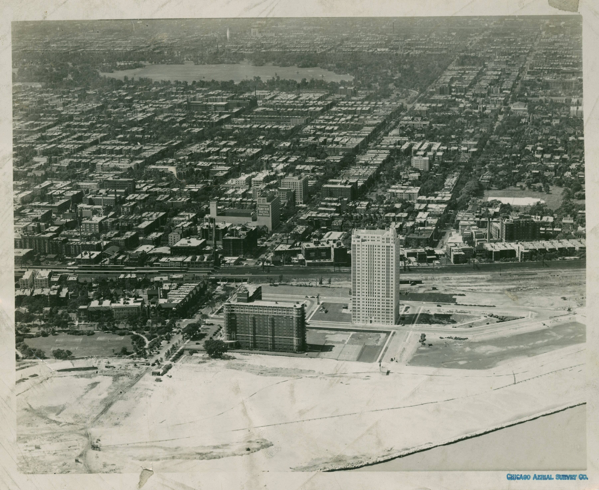

1
Hyde Park
Was Built
Was Built
1853–1893
A retreat for the wealthy.
Built by choices.
Kept that way.
Built by choices.
Kept that way.
Hyde Park didn't grow by
accident. It was planned, marketed, and designed as a private
refuge on the lake, far from the crowded city and far from Black
neighborhoods.
Those choices set the rules for who belonged.
Those choices set the rules for who belonged.

The Grand Court of the World's
Columbian Exposition at night. Charles Graham, 1893. Library of
Congress.
1853
Lawyer Paul Cornell buys 60 acres of lakefront farmland at 53rd Street and grows his holdings to about 300 acres.
1856
Cornell gives the Illinois Central 60 acres for a station at 53rd Street and guaranteed daily trains, and markets the area as Hyde Park.
1869
State law creates the South Park system, 1,055 acres of sandbar and marsh.
1871
Olmsted & Vaux deliver the park plan. The Great Fire burns the drawings that October, and Jackson Park sits unfinished for twenty years.
1889
Hyde Park joins Chicago by annexation.
1892
The University of Chicago opens beside the Midway with 594 students.
1893
The World's Columbian Exposition brings about 27 million visits to Jackson Park. Papers call it the "White City."
The lakefront itself was manufactured
Look east from 53rd Street today and you are
looking at made land. In 1919 the city approved filling the south
lakefront, crews reached 55th Street by 1924, and a shoreline road
opened in 1929. The beach, the drive, and the parks east of the
old shore all stand on fill.
A shoreline that moved
Diagram. The
shore once ran near the railroad embankment; everything east of the
old line was filled, relocated, and reshaped into lakefront lots
and clean sight lines.
Made for some, not for all
While the fair celebrated "progress," Black
Americans were shut out of its planning, its exhibit halls, and
nearly all of its jobs. Organizers offered one Colored American
Day late in the summer. Frederick Douglass worked the season from
the Haiti Pavilion, and with Ida B. Wells handed a pamphlet to
visitors at the gates. The same exclusion lived on in housing,
schools, and work.
The colored American is not
in the World's Columbian Exposition.
Title of the pamphlet distributed by Ida B. Wells
and Frederick Douglass at the fair, 1893
The university arrives
Classes began at Cobb Hall on October 1, 1892,
one mile west of the fairgrounds, with John D. Rockefeller's money
and Marshall Field's land. The trustees dressed a brand-new school
in Gothic stone so it would look centuries old. It became the
neighborhood's largest landowner, and the next sheets show how it
used that power.

1928The Hyde Park lakefront from
the air, 1928. The foreground parks stand on fill.
CHICAGO AERIAL SURVEY · NEWBERRY LIBRARY · PUBLIC DOMAIN
Place isn't neutral.
Hyde Park was built by
people, with land, laws, and power. Where we live today was shaped
by decisions made a long time ago.
ROOTED
FORWARD
FORWARD
rooted-forward.org